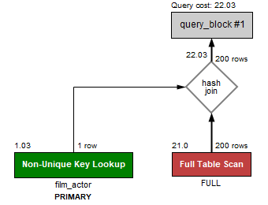

Intro
A simple javascript library to turn MySQL Explain JSON into vector UML sequence diagrams. Heavily inspired by Workbench and js-sequence-diagrams. I couldn't visualize the slow queries via SSH, so I decided to convert Workbench Visualization into this one. Hope you enjoy it. Please don't hesitate to contact me to improve this work further.
Demo. Try editing me below
{
"query_block": {
"select_id": 1,
"cost_info": {
"query_cost": "5935.00"
},
"table": {
"table_name": "ABC",
"access_type": "index",
"key": "BCD_is_valid_139e97715daf4370_uniq",
"used_key_parts": [
"is_valid"
],
"key_length": "1",
"rows_examined_per_scan": 25990,
"rows_produced_per_join": 25990,
"filtered": "100.00",
"using_index": true,
"cost_info": {
"read_cost": "737.00",
"eval_cost": "5198.00",
"prefix_cost": "5935.00",
"data_read_per_join": "811M"
}
}
}
}
Workbench Visualization
